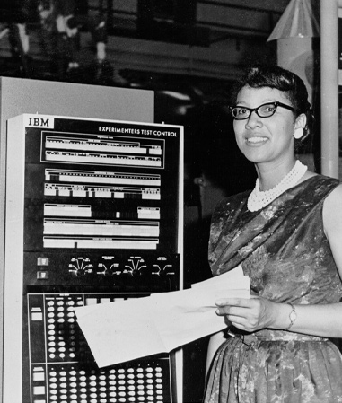

Ada Lovelace
10 December 1815 – 27 November 1852, England
Grace Hopper
9 December 1906 – 1 January 1992, USA
Edith Clarke
10 February 1883 – 29 October 1959, USA
Joan Clarke
24 June 1917 – 4 September 1996, England

Dorothy Vaughan
20 September 1910 – 10 November 2008, USA
Jean Sammet
DOB
Margaret Hamilton
DOB
Susan Kare
1954 – present
Dr Sue Black
DOB